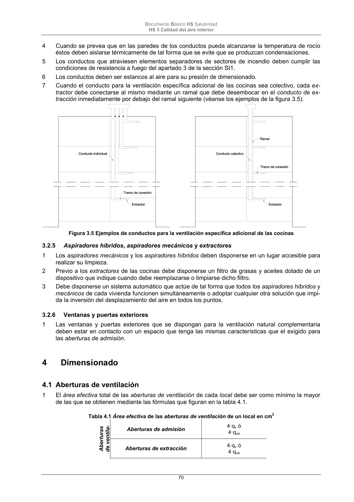

DB-HS Salubridad · edición 2022-06-14 · capa oficial
Documento DB-HS-oficial · SHA-256 del PDF 68df3caacc95f71aee2ec1ba7b2c65ae66155c21e3a8785521b8fdd4fd640d3b
Copia fiel del PDF fuente · Fuente oficial
Ficha de la disposición en la fuente oficial
Formatos: JSON del segmento · Markdown
Dimensionado 4.1 Aberturas de ventilación 4.1 Aberturas de ventilación 1 El área efectiva total de las aberturas de ventilación de cada local debe ser como mínimo la mayor de las que se obtienen mediante las fórmulas que figuran en la tabla 4.1. Tabla 4.1 Área efectiva de las aberturas de ventilación de un local en cm2 Aberturas de ventila- Aberturas de admisión 4·qv ó 4·qva Aberturas de extracción 4·qv ó 4·qve Documento Básico HS Salubridad HS 3 Calidad del aire interior 71 Aberturas de paso 70 cm2 ó 8·qvp Aberturas mixtas (1) 8·qv (1) El área efectiva total de las aberturas mixtas de cada zona opuesta de fachada y de la zona equidistante debe ser co- mo mínimo el área total exigida. siendo qv caudal de ventilación mínimo exigido del local [l/s], obtenido de las tablas 2.1 o 2.2 o del cálculo realizado para cumplir la exigencia. qva caudal de ventilación correspondiente a cada abertura de admisión del local calculado por un procedimiento de equilibrado de caudales de admisión y de extracción y con una hipó- tesis de circulación del aire según la distribución de los locales, [l/s]. qve caudal de ventilación correspondiente a cada abertura de extracción del local calculado por un procedimiento de equilibrado de caudales de admisión y de extracción y con una hipó- tesis de circulación del aire según la distribución de los locales, [l/s]. qvp caudal de ventilación correspondiente a cada abertura de paso del local calculado por un procedimiento de equilibrado de caudales de admisión y de extracción y con una hipótesis de circulación del aire según la distribución de los locales, [l/s].
